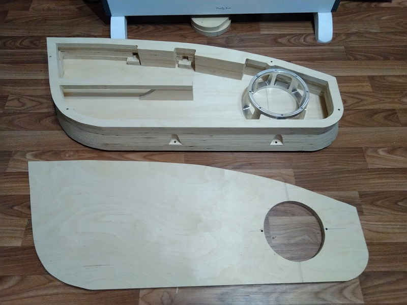
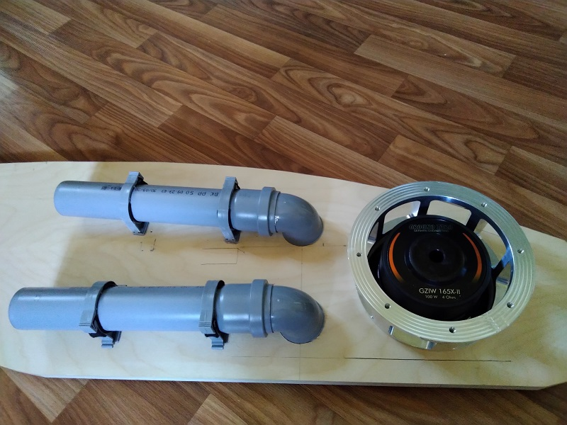
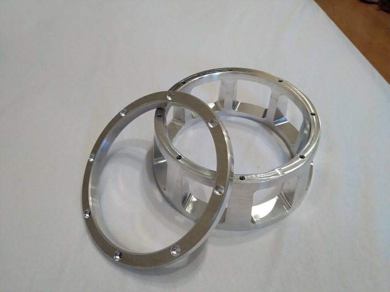
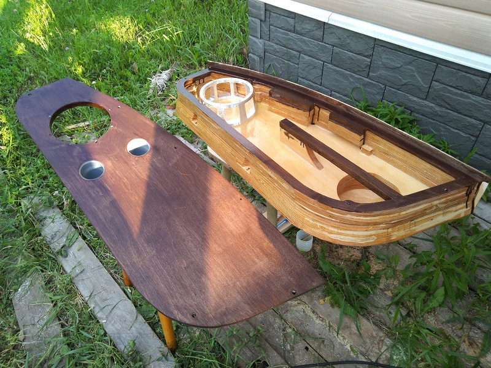
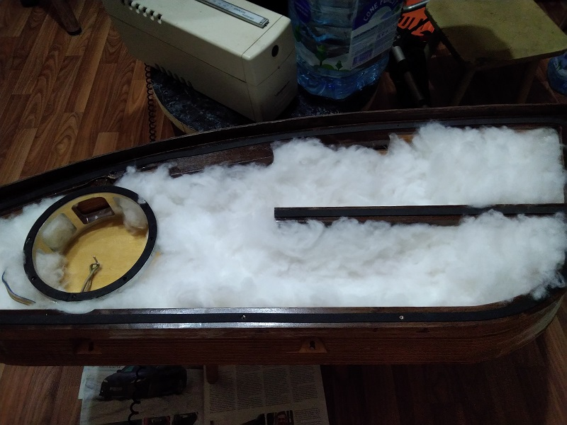
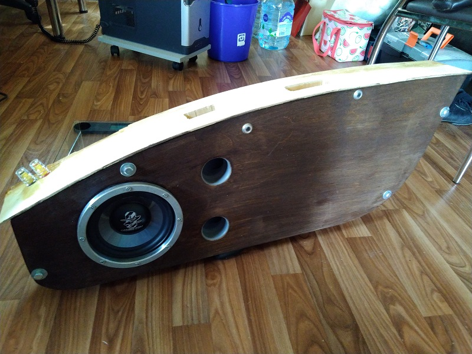

Основная проблема неправильного воспроизведения НЧ в автомобиле - это не выбор плохого динамика (хотя динамик тоже важен), а посторонние призвуки. Появляются они от разных вибрирующих поверхностей, которые вибрировать не должны. А заставляет их вибрировать тот самый динамик, закреплённый на тоненькой панели. Со временем производители научились крепить эти динамики непосредственно на металле двери, но металл хоть и жестче пластика, но тонкий (1-2 мм) и также успешно выполняет функцию барабана и начинает "подыгрывать". Потом стали применять подиумы для увеличения площади основания. А в тюнинг конторе вам ещё вклеют ребро жёсткости по диагонали.
Пройдя всё это понял что отчасти проблема решается, но однажды решил заморочиться идеальным оформлением НЧ.
Задумка не хитрая, а вот реализация не простая - сделать полноценную колонку из дерева. Колонка аккуратно випиливалась послойно из 18 мм фанеры (на 21 мм не решился из-за массы) и склеивалась ПВА. Заранее были сняты все мерки с двери, продумано крепление и размеры исходя из допустимого пространства. Основой послужила исходная панель двери + некоторое превышение по размерам (объёма же надо чем больше, тем лучше). Основные инстументы: лобзик и ручной фрезер.
В трубах фазоинвертора должно быть много воздуха, идеально было засунуть расчётную трубу диаметром 80 мм, но места для её размещения не хватило. Сделал двойной "выхлоп" на сантехнический 50-ках. В панель трубы вклеены эпоксидной смолой, с внутренней стороны прикрученные пластиковые хомуты, зазоры убраны противоскрипным материалом. На выхое трубы сделано небольшое закругление, хотя желательно делать закругление на большом радиусе, чтобы воздух при движении не шумел.
Плоскость корзины динамика с отверстиями, за которую осуществляется его монтаж самая вибронагруженная, поэтому поверхность крепления должна быть очень жёсткой - нельзя передавать импульсы движения другим, двигаться должен только диффузор! В домашней акустике это решается узкими стенками, если посмотрите на современную напольную акустику она вся узкая, но глубокая. Никто уже не строит акустику по принципу парусной S-90. Между колонками должно быть как можно больше места для создания "сцены". Вместе с этим опора корзины непосредственно на стенки колонки - удачное решение по части защиты от вибрации.
Здесь же решил выточить специальный подиум, который позволит задействовать жёсткость не только передней панели, но и задней. К задней панели крепление сделано болтами М6 на синей фиксирующей краске + приклейка на эпоксидную смолу. Кольцо на фото для равномерной фиксации динамика к подиуму.
Авто как снаружи так и внутри имеет дело с агрессивной средой: мороз, жара, резкие перепады температуры, высокая влажность. Дерево требует защиты, поэтому внешняя и внутренняя поверхность были покрыты эпоксидной смолой, а видимая часть тёмным септиком. По итогу прослушивания могу сказать, что решение покрыть внутреннюю часть эпоксидкой не самое удачное - поглощяющие возможности фанеры снизились, звуки больше отражаются, чем поглащаются и низы стали этакими "цифровыми", без мягкости.
Всё свободное пространство хорошенько заполнено синтетическим пухом.
Некоторые характеристики полученной конструкции:
Крепежные элементы можно убрать, на тот момент ещё не было ясности что это окнчательный вариант, поэтому пока шурупчики видны.
Возможно имеет смысл объяснить почему нельзя "отдать" воспроизведение НЧ сабвуферу в багажнике. Да это было бы проще, но звук должен идти спереди, звучание сзади неправильное, ухо его воспринимает некорректно. Сабвуфер у меня также есть, но его задача давать инфранизы, которые уже не позиционируются в пространстве.
Передавать звучание с помощью телефона конечно трудно, но для оценки прикладываю пару фрагментов.
Тут немного о вибрации, вернее о её отсутствии
Тут небольшой музыкальный фрагмент